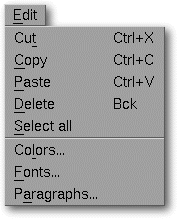

<!-- Documentation Xclamation (c)1994-2000 AXENE contact axene@axene.org>
<html>

<head>
<title>Edit Menu</title>
</head>

<body BGCOLOR="#FFFFFF" BACKGROUND="Images/back.gif" TEXT="#000000">

<p ALIGN="right">  </p>

<p><br>
<br>
The edit menu interacts with the Clipboard and edits different inventories of items. <br>
<br>
</p>

<hr>

<p align="center"><br>
 <br>
<small><i>Screen shot: Edit pulldown menu </i></small></p>

<p><br>
</p>

<hr>

<p><br>
</p>

<h3>The edit menu contains the following entries:</h3>

<ul>
  <li><a NAME="cut_menu_entry">The <i>&quot;Cut&quot;</i> command <b>allows the selected frame
    to be copied to the clipboard while clearing it from the document</b>. The selection will
    replace any contents on the clipboard and may be reinstated in another document or on
    another page of the same document using the <i>&quot;Paste&quot;</i> command. This command
    is gray if no frames are selected in the active document. </a><br>&nbsp;</li>
  <li><a NAME="copy_menu_entry">The <i>&quot;Copy&quot;</i> command <b>allows the selected
    frames to be copied to the clipboard</b> without clearing them from the document. The
    selection will replace any contents on the clipboard and may be reinstated in another
    document or on another page of the same document using the <i>&quot;Paste&quot;</i>
    command. This command is gray if no frames are selected in the active document. </a><br>&nbsp;</li>
  <li><a NAME="paste_menu_entry">The <i>&quot;Paste&quot;</i> command <b>allows the frames
    housed on the clipboard to be copied to the active document</b>. This command is gray if
    the clipboard is empty because no &quot;cut&quot; or &quot;copy&quot; operation has been
    effected. </a><br>&nbsp;</li>
  <li><a NAME="delete_menu_entry">The <i>&quot;Delete&quot;</i> command <b>deletes the
    selected frame or frames</b>. The deletion acts on two levels: if a frame contains an
    image, text, or a line art, the &quot;delete&quot; command will empty the frame without
    deleting the frame itself. If the frame is empty, &quot;delete&quot; will delete the frame
    itself. Once deleted, an item is irretrievable. </a><br>&nbsp;</li>
  <li><a NAME="select_all_menu_entry">The <i>&quot;Select All&quot;</i> command <b>selects all
    the frames present on the display screen</b> of the active document. If a frame is
    accidentally placed entirely outside of the display screen, this is the only option that
    can access it there. </a><br>&nbsp;</li>
  <li><a NAME="color_menu_entry">The <i>&quot;Colors...&quot;</i> command <b>allows you to
    edit the list of colors</b>. It calls up the '</a><a HREF="Box_Color.html">Color</a>'
    dialog box. <br>&nbsp;</li>
  <li><a NAME="font_menu_entry">The <i>&quot;Fonts...&quot;</i> command <b>allows you to edit
    the list of text styles</b>. It calls up the '</a><a HREF="Box_Font.html">Style</a>'
    dialog box. <br>&nbsp;</li>
  <li><a NAME="paragraph_menu_entry">The <i>&quot;Paragraphs...&quot;</i> command <b>allows
    you to edit the list of text rulers</b>. It calls up the '</a><a HREF="Box_Paragraph.html">Ruler</a>'
    dialog box. <br>&nbsp;</li>
</ul>

<p><br>
</p>

<hr>

<p ALIGN="right"></p>
</body>
</html>
